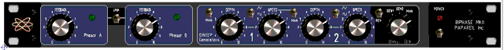
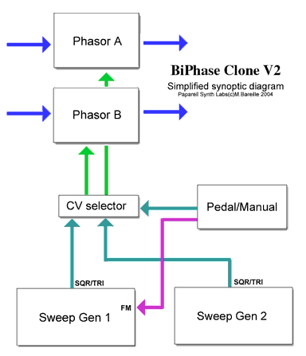
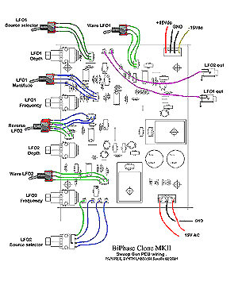
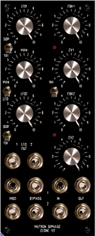

|
The Mutron Biphase
is a legendary phasor pedal, designed by Mike Beigel along with Aaron Newman at Musitronics USA in about 1973-4..
For more infos, please visit the Musitronics official website at
www.mu-tron.org
The Mutron Biphase Biphase is a 1x12 stages or 2x6 stages optical phasor with 2 sweep
generators ( LFOs) for square and triangle modulations. There is also a "pedal" CV input to control
each phasor manualy like a filter.
The Vintage Mutron BiPhase
page
Now here
is the second generation of Bi-Phase clones ;)

Design
notes
It is an upgraded
version my first Biphase clone,
more easy to reproduce with common parts available on the
market ...
The main difference
with vintages Bi-Phase is on led modulation drivers and
LDR cells. The schematic has been optimised again on that
point. Control CV of phasor is ranged (0,+5V) and 2 jack
plugs provide independant inputs with attenuators. Bypass
is optical too, same as in the vintage Biphase, but it is
now possible to drive it like a true VCAwith a 0 to +5V
CV range, to mix "phased" with "direct"
signal instead of only switching On/Off. A "slow"
vactrol LDR cell do the job, one per phasor ....
After a long
brainstorming about "what kind of LFO?" , the
solution retained is to stay glued to the vintage Bi-Phase
concepts of a pair of simple independant sweep generators.
Pulse and triangle modulation waveforms are available. LFO1
frequency is under CV control. Both sweep generators have
Freq ( speed) and Depth potentiometers . There are 2 LFO
outputs , a CV-Pedal input , all are assignable as you want.
It is 100% analogic and optical !
It is possible
to build it with common cheap parts and it sound good with
"lo-fi" aops :-)
Here is a synoptic,
of the structure of the clone ... Bypass VCA stages and
PSU are not shown here. Green and Magenta arrows are CVs
, blue for audio.

The BiPhase Clone
MKII is not a small module: to build a complete version it
you need (and if my computations are exacts ) to solder 122
resistors, 17 OPAs, 22 semiconductors, 31 caps, 8 LDR cells,
a handfull of pots, switches ,jacks and many other little
things.... Density is rather high on the Phasor pcb ! Unless
to say that , after the (successful) assembly of a complete
BiPhase clone pcb you will know a little bit more of this
mystic art :-)
For an obscure
format reason the
clone is composed of 2 pcbs. They can be used independantly.(
ie: to build a dual biphase = quadriphase by stacking many
phasor pcbs....). Wiring
of each pcbs is very "open": it is possible to assemble
an exact clone of the vintage Mutron Bi-Phase or to wire it
as a deeply customised synth module with all i/o connected
to jacks!
All potentiometers
are soldered on pcbs and spacing studied to be compatible
with Spectrol S149/249 series and Sfernice P11, or even cheaper
Alps, RadioOhm, Piher carbon pots with axe of of 3.18 to 6mm.
Well, i have designed a kind of "multiformat" pcb
footprint fitting with many pots easy to find ... Vertical
or horizontal single or multi turn trimmers can be mounted
too.
Pcbs are designed
to be screwed to a 5U MOTM front panel , fit with Larry Hendry's
brackets and 1U rack 19" /150 . MTA connectors for +/-15V
external power supply are implemented..
Here
are pictures of the prototype you can hear at the end of the
page. A bit ugly because of missing a front panel but work
fine ! It will be mounted in a 1U 19" rack soon now .
This assembly is just for trials needs and the show ! Transformer
is oversized , a much smaller can be used...
#MBC2-A
Also named "phasors pcb" . It contain two 6 stages
optical Phasors +2 quiet bypass VCAs ( optical again :-) .
Fully independant CV controls for "phase" modulations
and Bypass optical VCAs... Here are 2 ideas of wiring for
this pcb, many other configurations are possible as you can
imagine...
# MCV2-B
It contain two independant Sweep Generators ( LFOs) ,
the pedal controler and an optional +/-15V psu to feed the
whole clone. It is here because of rack 19" assembly
...

Front Panel
An idea of front
panel in 19" rack is at the top of page. Bypass control
inputs can be wired many different ways . Even compatibility
with vintage Bi-Phase pedal switch is possible, with the same
DIN plug... So here is a design idea for a MOTM style
front panel, it is a "virtual" draw... Many others
wirings are possible. Clic on pictures to enlarge.
(suggestion
de presentation)

Sound Samples
In samples bellow
the sound source is a modular synth: VCO+VCF+VCA go inside
a Biphase clone prototype fitted with TL072 and Vactrols
dual cells... Phasing stages are modulated by LFO shapes
( triangle and pulse) or manualy using a CV-ADSR module
in sustain mode ( act as a linear CV source between 0 and
7V ).
For this last
sample a CD player is used as source and all opamps are good old 1458...
Modulations are internal
sweep generators...
"Inside
clones growing chambers..." (mp3-stereo)
BiPhase
Clone 2 pcbs + Construction Manual
are available on order
|